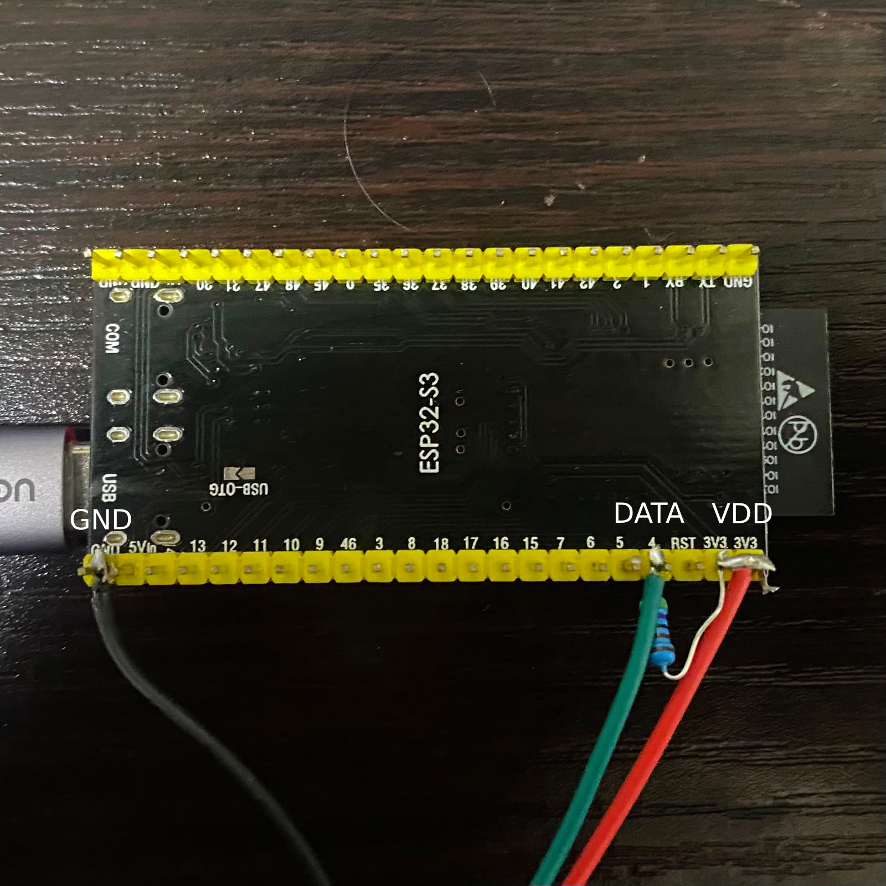
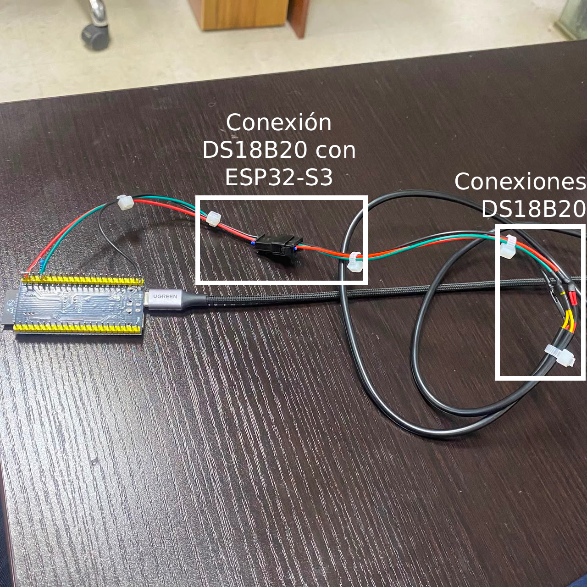
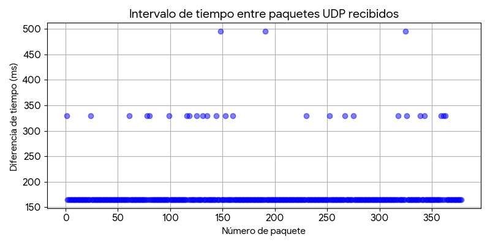
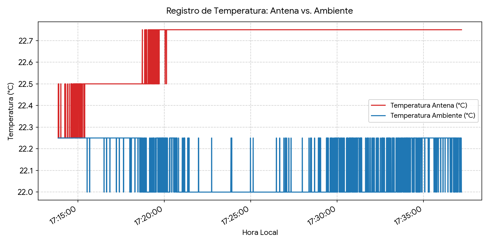

mzvic@mzvic:~$ ./arduino-ide.AppImage --no-sandbox
We were running into a latency bottleneck with the thermal monitoring of the WVR22GHz project in CePIA. The legacy stack handled everything inside a Raspberry Pi OS environment, but between kernel scheduling overhead and synchronous 1-Wire calls, latency went off the rails. To accurately track thermal data in real time, we had to delegate acquisition to a dedicated MCU.


I swapped the Pi for an ESP32-S3 handling sampling duties. Both DS18B20 sensors (antenna body and ambient air) sit in parallel on GPIO 4 with a standard 4.7kΩ pull-up. I defined a packed C++ struct (__attribute__((packed))) sitting at exactly 12 bytes, sending raw datagrams via UDP Broadcast over the LAN.
Binary Payload Definition (12 Bytes Packed):
uint32_t timestamp_ms(4 bytes) -> MCU relative uptime millisecond counter.float temp_ambiente(4 bytes) -> Ambient temperature float32 reading.float temp_antena(4 bytes) -> Antenna chassis temperature float32 reading.
The initial spec asked for 10 ms (100 Hz) sampling, but that's physically impossible given the DS18B20 ADC integration time. I dropped the sensor resolution to 9 bits, bringing minimum hardware conversion down to ~94 ms. Crucially, I set setWaitForConversion(false) in the driver to disable blocking calls, letting an asynchronous millis() state machine handle polling loops without stalling execution.

On the host end, a lightweight Python script (logger_udp.py) binds to the UDP socket, unrolls the payload and flushes timestamps directly to a CSV stream. Profiling inter-packet intervals revealed a rock-solid base latency of 165 ms (~6 Hz).
Here is the exact hardware timing breakdown of that 165 ms loop:
- ~15 ms: Issuing
Skip ROMandConvert Tbroadcast commands over 1-Wire. - ~95 ms: Asynchronous 9-bit ADC integration cycle.
- ~55 ms: Sequential scratchpad extraction from both sensors on the shared bus.
The packet interval plot shows occasional spikes at 330 ms and 495 ms. Since those are exact integer multiples, we know the ESP32 state machine never froze or dropped frames internally; these were just occasional UDP drops across the WiFi layer.
